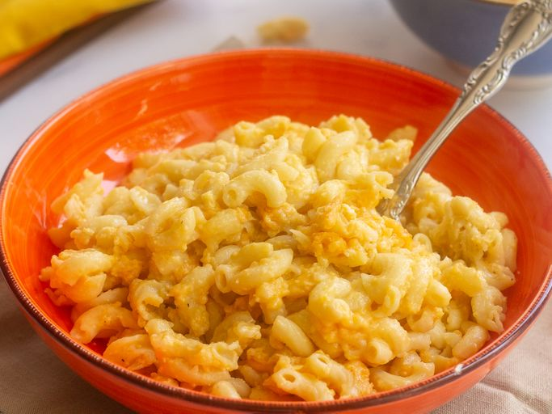

Slow Cooker Mac and Cheese

https://www.allrecipes.com/recipe/237311/slow-cooker-mac-and-cheese/
This crockpot mac and cheese is creamy, comforting, and takes just moments to assemble in a slow cooker. Great for large family gatherings and to take to potluck dinners. It's always a big hit!
Prep Time: 15 mins. || Cook Time: 3 hrs 15 mins. || Servings: 12
Ingredients:
- Elbow Macaroni
- 1 Stick of Butter
- Salt & Pepper
- Shredded Chedder Cheese
- Whole Milk
- Evaporated Milk
- 2 Eggs
- Condensed Chedder Cheese Soup
- (Optional) Ground Paprika
Preparation Steps:
- Boil the pasta in salted water, then drain and transfer to the slow cooker.
- Stir in the butter, seasonings, and about half of the Cheddar.
- Whisk the evaporated milk and eggs together, then stir into the pasta.
- Whisk the milk and the soup together, then stir into the pasta.
- Sprinkle the remaining cheese over the pasta mixture and garnish with paprika.
- Cook on Low for 2 ½ to 3 hours.